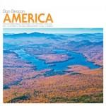

Top 50 Albums Of 2012 (Part One)
So here it is. 28 writers contributed their individual end of year lists. We counted the votes, applied an unnecessarily complicated scoring algorithm, and made sure that all of our favourite albums came out on top. That's how these things work, right? I'm only joking, of course – we stopped rigging the poll years ago. No Ripcord is a democracy. While we go to extreme lengths in the vetting process to make sure that none of our new recruits enjoy the music of Mumford & Sons, we don't actively attempt to control our writers' tastes. In keeping with this approach, our end of year list consists of the fifty records that scored the most points, in that very order. No one's list looked exactly like this, and I'm sure each of every one us would love to make a few additions (not to mention a few subtractions). It is what it is – a celebration of some of the finest music released in 2012. Read it, debate it, seek out some records you haven't heard, and most importantly tell us what you enjoyed in 2012.
The top 25 will be published tomorrow.
. . .
50. The Mountain Goats
“Transcendental Youth”
(Merge)
The best part about listening to a band with a long, extensive career like The Mountain Goats have, is that you witness them experiment, evolve, and eventually master their own sound. At this point, John Darnielle and company have such a great handle on the inner workings of their narrative storytelling, that every release seems to be that much more thrilling than the last. The album may not reach the same highs as Tallahassee or The Sunset Tree, but Darnielle's writing is arguably better than itʼs ever been, offering characters that are so unique and oddly specific that he could honestly devote a whole concept album to each one. Let's face it, Darnielle is at his best when he is able to tap into the darkest, most hopeless situations a person could ever face-- and at its very core, that is the appeal of Transcendental Youth. (Andrew Ciraulo)
49. Converge
“All We Love We Leave Behind”
(Epitaph)
In popular music, the general consensus is that once you’ve reached a certain age it’s time to make way for the young. But one of the aspects that differentiate hardcore from other genres is how their audience gives reverential service to those who’ve earned their stripes with time. Converge were initiated quite a long time ago, 25 years to be exact, and they’re possibly even more passionate about their craft than they did back when they were figuring out how to top a Slayer riff. All We Love We Leave Behind can be described as a technically virtuosic effort that brims with emotional resonance in every sharp-knifed riff, relentlessly moving forward without losing sight of how they got there. When so many bands struggle to find a reassurance of permanence, that which makes them belong as a whole, Converge are cementing their place in the hardest way possible before they eventually consider fading away. (Juan Edgardo Rodriguez)
48. Bobby Womack
“The Bravest Man In The Universe”
(XL)
2012 saw veteran soul artist Bobby Womack take his sound into the 21st century and beyond by collaborating with XL label founder Richard Russell and Gorillaz's Damon Albarn on The Bravest Man In The Universe. It's testament to Womack's talent and versatility that he sounds completely at home in these cinematic sci-fi soul surroundings. Blending old and new in the most inspired of ways, this is the sound of a classic artist at ease with himself and with the contemporary music scene. Highlights are many, but worth a special mention are the rootsy guitar and earthy vocals of Deep River along with Dayglo Reflection, a cut-glass duet with starlet du jour, Lana Del Rey. (Gary McGinley)
47. Punks on Mars
“Bad Expectations”
(Zoo Music)
From the garish cartoon adorning the cover to the frantic new-wave referencing of the music within, Bad Expectations just screams fun. On this bright and breezy LP – only one track extends beyond the three minute mark – band leader Ryan Howe serves up a masterclass of how to tap into influences and channel the spirit of an era without generating a lifeless pastiche. One of the more enjoyable listens of the year, it also ranks as one of the most criminally overlooked. It doesn't have to be this way. (David Coleman)
46. Patti Smith
“Banga”
(Columbia)
This album is about journeys, physical and spiritual. Reams of copy have been written about Patti Smith as punk pioneer, but scant attention is given to her mystical side. She writes in her liner notes that an artist “is obliged to manifest the spiritual as physical matter”, and songs like Seneca, Tarkovsky, and Amerigo focus on the inner workings of visionaries such as artists and explorers. This common thread, of vision and intuition, is given free reign on Constantine’s Dream, a brilliant set piece inspired by prayer and pilgrimage. Old bandmates and friends like Lenny Kaye, Jay Dee Daugherty, and Tom Verlaine lend musical rudder for Smith’s poetic sails. All in all, a worthy trip. (Angel Aguilar)
45. Animal Collective
“Centipede Hz”
(Domino)
The initial impression one if left with after hearing Centipede Hz for the first, or possibly second or third, time is one of overload. The mix is dense with sound, as if all amplifiers were turned to max and they chucked in a few more instruments just for good measure. But then you listen to the songs, and you realise that Animal Collective are actually one the foremost song-writing groups at work today. They have plugged into the late 2000s – early 2010s zeitgeist like no other band, especially in America. Where other groups wear their debt to the past clearly, AC buries theirs beneath a wash of modernity. Look beneath the wash though and you will find some great songs. The first four tracks here are some of the strongest released this decade. The album suffered unduly on release – perhaps people were expecting another Merriweather. An unfair expectation, as Centipede is what it is – another great avant-pop album by the foremost proponents of the genre. (David Wood)
 44. John Talabot
44. John Talabot
“ƒIN”
(Permanent Vacation)
There are dance albums and dance epics. One’s a collection of individual cuts, organized to fulfill the artist-in-question’s style; the other utilizes those stylistic principles as a foundation for something grander – an imagined landscape populated with sonic intricacies that seek to transport your mind as well as your muscles. Given the string of singles John Talabot has teased over the course of some four years, the likelihood that this long-awaited full-length debut would land in the latter category is surprising, especially because those singles appear here as if originally written to be part of fin’s evocative, Heart Of Darkness-like journey. Talabot doesn’t just find a rare kinetic balance but a complete state of being, transmitted from some dense jungle south of Ibiza’s lush coastline. (Ryan Pratt)
 43. Deerhoof
43. Deerhoof
“Breakup Song”
(Polyvinyl)
With Breakup Song, Deerhoof’s twelfth release, the band merged their understanding of dance pop with their very unique sense of song arrangement and keen attention to groove. Upon first listen, I wondered if Deerhoof had spent the last year studying the Dust Brothers. With what may well be the most realized and successful Deerhoof album since 2007’s Friend Opportunity, Breakup Song casts aside the banality of rump shakin’ club fodder, experimenting with beat transitions (Breakup Songs), tempo (Bad Kids to the Front) and the simultaneous acknowledgment and alteration of form (To Fly or Not to Fly, The Trouble with Candyhands). Mothball the Fleet and Flower are two of my favorite songs to come out this year, art pop too sincere to simply qualify as pretentious. (Sean Caldwell)
42. Perfume Genius
“Put Your Back N 2 It”
(Matador)
Don’t let the cheesy, text message spelling of the album’s title fool you: This is an album with nothing to hide and free of any irony. From the quivering of Michael Hadreas’ disheveled voice to the stark, isolated piano chords dispersed throughout, Put Your Back N 2 It is fraught with painful stories and emotions delivered with an almost uncomfortable level of honesty. But with the help of some truly poetic lyrics, gospel-tinged ballads, and lush production elements that are as grandiose as they are intimate, Hadreas transcends the pain and anguish he sings about, often in mid song, to find reconciliation, and possibly even forgiveness, in the album’s darkest corners. (Peter Quinton)
 41. Cat Power
41. Cat Power
“Sun”
(Matador)
Simply 'just lovely'can best describe Chan Marshall's, aka Cat Power's latest, Sun. Her ninth album, spanning a career starting in the late 1990s, Sun continues Marshall's take on hypnotic rock. The album captures Marshall's essence, a blend of moody blues rock, but with sightly a more upbeat, playful tempo, compared to her previous works. Its standout single, Ruin, captures the the up swing, but when listened to carefully, it harkens back to her roots. The song’s chorus of “bitchin’, complainin’, when some people ain’t got shit to eat,” isn’t usually the subject line of a pop song’s chorus, but Chan’s smooth vocal delivery helps to keep your feet moving. (Carlos Villareal)
40. Hot Chip
“In Our Heads”
(Domino)
In Our Heads marks a return to form for Hot Chip, who previously seemed to have lost a bit of their original magic by pursuing a more serious dancefloor-oriented sound. And while this isn’t quite back to their roots, it is much more well-rounded than the last two albums. The bassline to Night And Day is simply irresistible, as is the schoolyard chant and pounding off-beat bass kick in Flutes. None of this is as delightfully silly as Coming On Strong, nor as emotionally charged as The Warning, but for a fifth record it’s a jolly good effort. (Joel Stanier)
39. Niki & The Dove
“Instinct”
(Sub Pop)
Swedes Niki & The Dove were hotly tipped at the start of the year but they never quite managed the commercial breakthrough their impressive debut album so richly deserved. Instinct married the dark, brooding electronica of goth with huge, crashing choruses to great effect, especially on stand-out singles Tonight and Somebody. This was an album that’s overblown, melodramatic and histrionic, but never lost sight of what’s truly important: melodies, hooks and songcraft. You may not have realised you were looking for a band who are the missing link between Bauhaus and Robyn, but you are, and Niki & The Dove are that band. (Joe Rivers)
38. David Byrne & St. Vincent
“Love This Giant”
(4AD)
When one of the most eccentric and creative musicians of the past several decades collaborates with a young musician quickly gaining a reputation as one of the most introspective lyricists and versatile guitarists, it seems impossible for things to go wrong. But then, it also seemed impossible that things would go so right with so many horns. Creatively, this is new territory for both artists, but it is equal parts St. Vincent introspection and Talking Heads esotericism. Her songs sound like his songs, his sound like hers, and despite a lack of shared vocals, Love This Giant always sounds like an honest collaboration. This level of cohesion, versatility, and unashamed fun has rarely sounded so effortless. (Forrest Cardamenis)
 37. Purity Ring
37. Purity Ring
“Shrines”
(4AD)
Rarely do acts come so fully formed as Purity Ring. While the influences of the (sickeningly young) Canadian duo were fairly easy to identify – the dream-pop of their predecessors on the 4AD label, the skewed hip-hop beats of drag, the minor key euphoria of dance music – their debut full-length still managed to reveal a definite originality, largely thanks to the macabrely literate lyrics of Megan James, and her bandmate Corin Roddick’s cavalier attitude towards them – happily twisting her voice to render a sentiment sweet and winsome at one moment, a melancholy howl the next. (Mark Davison)
36. El-P
“Cancer 4 Cure”
(Fat Possum)
Former Company Flow rapper/producer El-P’s third solo album follows in pretty much the same vein as its two predecessors. That’s not to say it’s not a great album, it just doesn’t necessarily bring anything new to the party. El still conjures a digital aural dystopia – his crunching, explosive musical setting a fitting backdrop to his angry anti-everything rant-rap. The energy and commitment are hard to deny, and the album is certainly brilliantly produced, but the shock factor of hearing his 2002 debut, Fantastic Damage, is missing here. 10 years on, El is still a master at what he does, but with Death Grips upping the ante, can he afford to offer us more of the same? (David Wood)
35. Bat For Lashes
“The Haunted Man”
(Parlophone)
The words thrown around in reference to Natasha Khan’s third album are “stripped back” but that’s not accurate. Sure, the melodies are tighter and the production is slimmer than Two Suns, but this is still a record of musical watercolors. Instead, every song on this record focuses on being as direct as possible. All Your Gold is fixed with a taught guitar part until the chorus where Khan lets the line snap with her dancing voice. The title track features Khan singing her way through an electronic drum pattern, sharp strings and a Gregorian choir, until about three minutes where she burst forward in a performance that’s worth the wait. Marilyn keeps climbing and reaching new heights, even when you think it couldn’t get any more transcendent. It is the perfect album to listen to in winter, a blizzard of emotions, instruments and vocals that form a unique and beautiful gale storm of melodies. (Joe Marvilli)
34. Mount Eerie
“Ocean Roar”
(P.W. Elverum & Sun)
With Ocean Roar, Phil Elverum has constructed an album so steeped in hazy nostalgia and devastating catharsis that an uninformed fan may find it a bit too intense for a casual listen. With songs that pummel the listener with waves of dense distortion and metal theatrics (Pale Lights) and other tracks like I Walked Home Beholding and Waves that turned the lo-fi indie rock tendencies of his previous albums inside out, Ocean Roar is the record that fans have always expected Elverum to make and that easily bore the weight of even the most ardent fan expectation. But this is an album that requires active participation and rewards those who put in the necessary time to wade through its opaque assembly with one of the best albums of Elverum’s career and one of the finest records of this year. (Joshua Pickard)
33. Julia Holter
“Ekstasis”
(Rvng Intl.)
The energy of Ekstasis is unique to Holter’s virtuosity. There are infinite variations of timbre from rudimentary instrumentation to electronic zings. Opener, Marienbad exemplifies the rich lustre of the record, the arrangement convoluting in desperation; Holter’s soothing lilts echoing spiritual chants and wails. The record envelops the listener making use of strange elements such as background chatter beneath bellowing organ. Her classical influences no doubt mould her style and dictate the existential feel of the record owing as much to Greek tragedy as modernised lust and heartbreak. Ekstasis is transcendent, ethereal and mesmerising with a sacrificial air of one’s soul to the unknown, however, none of her distinctive and graceful eloquence perishes in the pyre. (Matt Bevington)
32. Killer Mike
“R.A.P. Music”
(Williams Street)
The merging of El-P’s futuristic production with Killer Mike’s hardcore Southern-rap delivery is an original and potentially important moment in underground hip-hop. El-P released his (also great) solo record Cancer 4 Cure simultaneously, and whereas El-P’s lyrics are oblique and disorientating, Mike boasts the virtue of directness. His pummelling delivery is incisive at every turn – especially when he gets fiercely political, such as his scathing attack on 80s conservatism on Reagan, and the inequality of inner-city America on Anywhere But Here. Cerebral hip-hop records generally tend to obfuscate and require a lot of work from the listener, but Killer Mike manages to be intellectual with a visceral bluntness – and he closes his record with a convincing affirmation of the spiritual and social potential of rap. (Stephen Wragg)
31. METZ
“METZ”
(Sub Pop)
Punk is alive and well, not merely clinging to the ropes but able to inflict some damage. Metz's stellar self-titled release helped bring the genre back to the forefront of rock in 2012. The Canadian trio crafted a fierce 30 minutes of post-punk ruckus that picks up after where Nirvana and Shellac left off. The relentless barrage of noise laden feedback and brutal rhythms, with Alex Edkins' vocal delivery, resuming a man horsed after screaming for his life, makes for the perfect soundtrack to a head-on collision. After a listen, you may find yourself finally finding the courage to pick a fight with that neighbor, whose dog is always pooping on your lawn and never cleans up after it. Be forewarned. (Carlos Villareal)
30. PS I Love You
“Death Dreams”
(Paper Bag)
Our very own Juan Edgardo Rodriguez introduced me to PS I Love You about 18 months ago. I can still vividly recall being blown away by the band’s powerful debut, Meet Me At Muster Station, while standing in a nondescript train station on the west coast of Sweden. Engrossed by the noise, I almost missed my train. The presence of Death Dreams in this list is particularly heart-warming; the record received mixed reviews from other publications, yet still garnered a devoted following here at No Ripcord. Dripping with tension, bursting with raucous energy, and topped off with some mind-blowing guitar heroics, PS I Love You has undoubtedly raised its game. (David Coleman)
29. Dan Deacon
“America”
(Domino)
Dan Deacon is probably one of the most interesting characters on the indie scene. When he’s not busy making viral videos or staging elaborate, crowd-participatory raves, he makes absolutely brilliant EDM albums. While previous LPs like Bromst and Spiderman Of The Rings were the effervescent soundtrack to a celebration, America is a much more introspective and grandiose effort. Granted, the A-side of this record may not be totally dissimilar to Deacon’s more familiar rave music, but the lavish America Suite on the B-side is truly something unique – seamlessly blending pulsing electronic rhythms with the vast, open sounds of an orchestra. And while at times America can be a bit overwhelming, it's ultimately well worth the listen. (Andrew Ciraulo)
 28. Chromatics
28. Chromatics
“Kill For Love”
(Italians Do It Better)
Beginning with a stunning cover of Neil Young’s Into the Black, Kill For Love brought a warm organicism to the usually sterile, though gorgeously expansive, synth-pop genre and gave Chromatics mastermind Johnny Jewel’s Italians Do It Better label another masterstroke in its discography. From the smooth technicolor synths and drum loops on tracks like These Streets Will Never Look the Same and Back From the Grave, Kill For Love felt like the soundtrack to countless nights driving around in deserted cities. These songs felt personal and readily identifiable in a genre primarily known for glossy pop art and a tendency to keep listeners at a distance, and Jewel knew that a connection to a beating musical heart was a necessity for fans who wanted to completely immerse themselves in the massive world that he and the band had fashioned on Kill For Love. A perfect example of how an artist’s distinct creative vision prevailed over well-worn genre traditions, this album made it possible for people to look at electronic music apart from the past and allowed for the possibility that music had no boundaries and could sound like nothing we’d ever heard before. (Joshua Pickard)
 27. Twin Shadow
27. Twin Shadow
“Confess”
(4AD)
Even with the 80s revival having now outlasted the decade itself, it seemed unlikely that any act in 2012 would (or even could) channel the perennially unloved Kenny Loggins or Black (the one responsible for Wonderful Life, not Steve Albini’s still highly regarded lot), yet that’s precisely what George Lewis Jr did on his second album, and what’s more, he married it with an unflatteringly ridiculous sci-fi-biker-gang aesthetic. So, it says a lot for Lewis’ talents as a performer and a songwriter that Confess turned out to be such a success; its eleven tracks offering plenty of blissfully dramatic synthpop thrills, with the likes of Five Seconds or When The Movie’s Over perhaps even instantly accessible enough to be appropriated by the ‘guilty pleasures’ movement, if they weren’t so beautifully honest in their delivery. (Mark Davison)
 26. Burial
26. Burial
“Kindred EP”
(Hyperdub)
Another Burial release, another critical frenzy and temptation to indulge in the use of as many superlatives in a single review as possible. While Burial’s releases have always been sparse in terms of quantity, his Kindred EP is perhaps his most potent statement that they never fall short in quality. Covering only three tracks in a little over 30 minutes, Kindred offers the fullest exploration of Burial’s visceral, brooding atmosphere, revealing the music hidden in every corner of a dark South London alleyway. There’s a strange pleasure to be derived from reviewing his latest EP; as adjectives seemed transferable from track to track in the past, Kindred seems the proper place, if there ever was one, to start inventing new words. (Michael Smith)
. . .
The final part of our Top 50 Albums of 2012 – the top 25 – will be published tomorrow. If you missed our Bubbling Under article, featuring twenty records that just missed the cut, you can find it again here.
18 December, 2012 - 08:59 — No Ripcord Staff